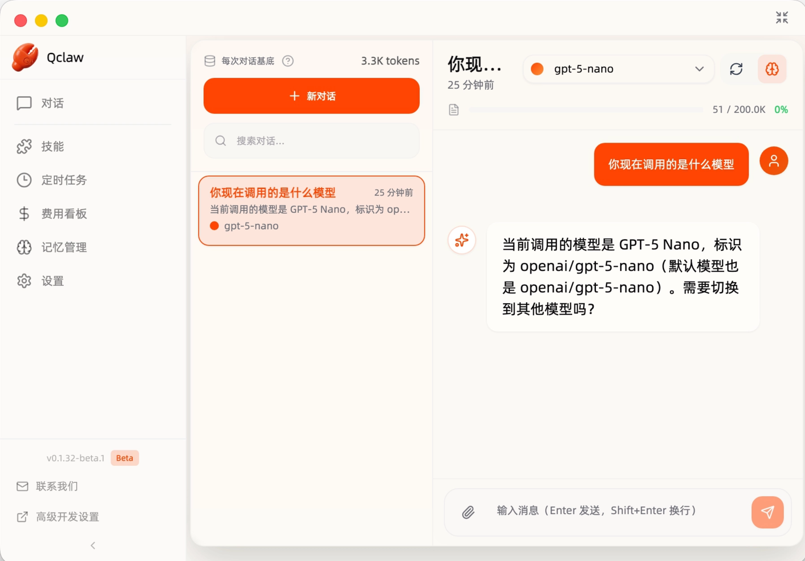

不用命令行
也能养
小龙虾
ZliangClaw 是专为 OpenClaw 生态打造的全能桌面管家。极致的 GUI 交互，一键集成各平台助理，从繁琐配置中解放你的双手。

全方位赋能
集成最强管理套件，助你轻松驾驭 AI。不只是简单的界面，而是生态的入口。
全可视化仪表盘
直观查看各平台助理运行状态、消息吞吐量及响应速度，实时掌控全域动态。
插件一键即存
官方插件市场深度集成，无论是知识库接入还是绘图工具，一键安装极速生效。
隐私密钥安全
API Key 及核心配置本地加密存储，绝不上传云端，确保你的数字资产绝对安全。
零基础一键部署
内置轻量化 Node 环境与依赖包，告别命令行手动配置。双击运行，输入密钥即可启用。
告别繁琐，拥领未来
为什么成千上万的开发者和企业选择了 ZliangClaw？
传统 CLI 部署
ZliangClaw
安装只需三步
极简安装流程，让技术小白也能享受 AI 的乐趣。
下载 ZliangClaw
根据您的操作系统（Windows / Mac / Linux）选择对应的安装包。双击 .exe 或 .dmg 文件，跟随指引完成安装。
配置环境变量与密钥
打开软件，在“配置中心”填入您的 AI 模型 API Key 以及通讯软件（如飞书、企业微信、钉钉等）的接入凭证。
一键启动，全局掌控
点击“启动”按钮，软件将自动初始化 OpenClaw 核心。您可以在工作台直接管理您的 AI 助理。
常见问题
消除疑虑，快速上手 ZliangClaw。
它真的是免费的吗？
是的，ZliangClaw 核心功能永久开源免费。我们通过社区贡献和插件生态维持开发。
我的 API Key 安全吗？
绝对安全。所有密钥均通过 AES-256 本地加密存储在您的个人电脑中，软件不会上传任何敏感配置到云端。
支持哪些 AI 模型？
目前原生支持 DeepSeek, OpenAI, Claude, 智谱 AI 以及所有兼容 OpenAI 格式的本地大模型。
安装需要特殊环境吗？
不需要。ZliangClaw 内置了运行所需的轻量化环境，您只需下载安装包，双击运行即可，无需手动安装 Node.js 或 Python。